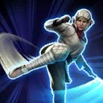

Leia (Jedi Training)
Force-trained Attacker who empowers Jedi allies
Force-trained Attacker who empowers Jedi allies
Deal Physical damage to target enemy twice.
If Jedi Master Luke Skywalker is the ally in the Leader slot: if target enemy has Speed equal to or higher than Leia (Jedi Training)'s, she gains Jedi Lessons for 3 turns (max 3 stacks). If target enemy has Speed lower than Leia's, she deals another instance of damage for each time this ability is used in this battle (max 3 instances).
If it's not her turn, she gains 15% Defense Penetration (stacking) for 1 turn. This attack can't be countered.

Deal Physical damage to target enemy twice, dealing 25% bonus damage (max 200%) for each stack of Jedi Lessons gained by Jedi allies in this battle, which can't be evaded. Inflict Off Balance on target enemy for 2 turns, which can't be resisted. Reduce the cooldown of The Final Lesson by 1 for each critical hit scored.
If Jedi Master Luke Skywalker is the ally in the Leader slot: if target enemy is inflicted by Ability Block, Buff Immunity, or Daze, which can be dispelled, dispel them and inflict Ability Block, Buff Immunity, and Daze on them for 1 turn, which can't be dispelled or resisted. If they are not inflicted by those debuffs, increase target enemy's cooldowns by 2 and Jedi allies gain Foresight for 2 turns.
Deal Physical damage to target enemy. Jedi allies gain 50% Offense for 1 turn.
Jedi allies' Protection recovery is increased by 10% and all enemies' Protection recovery is reduced by 10% for each time this ability is used until the end of battle.
If Jedi Master Luke Skywalker is the ally in the Leader slot: he gains 10% Ultimate Charge and an additional 10% Ultimate Charge per stack of Jedi Lessons Leia (Jedi Training) has. Remove 100% Turn Meter from the target enemy, which can't be resisted.
Deal additional effects based on the target enemy's role:
- Attackers: Dispel all buffs on target enemy and inflict Offense Down for 2 turns, which can't be dispelled or resisted.
- Healers and Supports: Dispel all debuffs on Leia and inflict Healing Immunity for 2 turns, which can't be dispelled or resisted.
- Tanks: Call all other Jedi allies to assist and inflict Defense Down for 2 turns, which can't be dispelled or resisted.
Omicron Boost : While in Grand Arenas and if Jedi Master Luke Skywalker is the ally in the Leader slot: Deal an additional instance of damage to all enemies based on Jedi Master Luke Skywalker's Max Protection and dispel all debuffs on Jedi allies.
At the start of battle Leia (Jedi Training) has -50 Speed. Whenever she attacks out of turn, she gains a stack of Force Connection and Jedi Master Luke Skywalker gains 10% Max Protection (stacking, max 100%) until the end of battle. Leia gains 50 Speed whenever she gains a stack of Jedi Lessons (stacking, max 150).
If Jedi Master Luke Skywalker is the ally in the Leader slot, Leia's attacks critically hit if possible.
When Jedi Master Luke Skywalker uses Heroic Stand, revive Jedi allies with 100% Health and Protection, grant them Jedi Legacy until the end of battle, and Jedi allies recover 100% Health and Protection.
Omicron Boost : While in Grand Arenas and if Jedi Master Luke Skywalker is the ally in the Leader slot: Enemies defeated by Jedi allies can't be revived. Whenever a Jedi ally is Dazed or Stunned, a random Jedi Attacker ally gains a bonus turn. At the end of each ally's turn, if Jedi Master Luke Skywalker has 100% Ultimate charge, he takes a Bonus Turn (once per battle).

Leia (Jedi Training) has +100% Defense. If Jedi Master Luke Skywalker is the ally in the Leader slot, Jedi allies have +100% Max Protection until the first time Leia is defeated.
Whenever a Jedi ally damages an enemy, that ally recovers 10% Protection. At the start of each Jedi ally's turn, Jedi Master Luke Skywalker gains 5% Ultimate charge. Whenever a Jedi ally uses Inherited Teachings for the first time, they gain a bonus turn.
Omicron Boost : While in Grand Arenas: While Jedi Master Luke Skywalker is Taunting, Jedi allies take reduced damage from Percentage Health damage effects and whenever a non-Tank Jedi ally is damaged twice consecutively, that ally gains Stealth for 1 turn. If Jedi Master Luke Skywalker is the only ally version of Luke present: whenever Jedi Master Luke Skywalker (Heroic) uses They Grow Beyond, he inflicts Protection Disruption on target enemy for 1 turn, which can't be dispelled, evaded, or resisted. Whenever he uses Efflux, he Stuns all enemies for 1 turn.